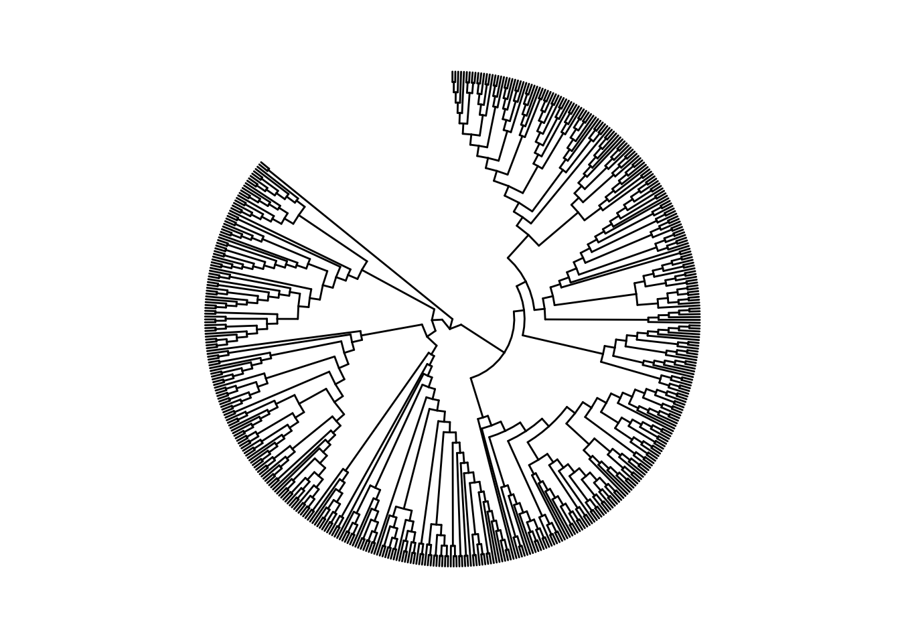
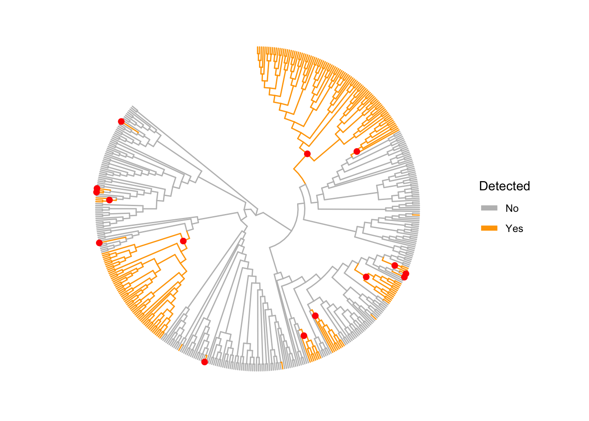
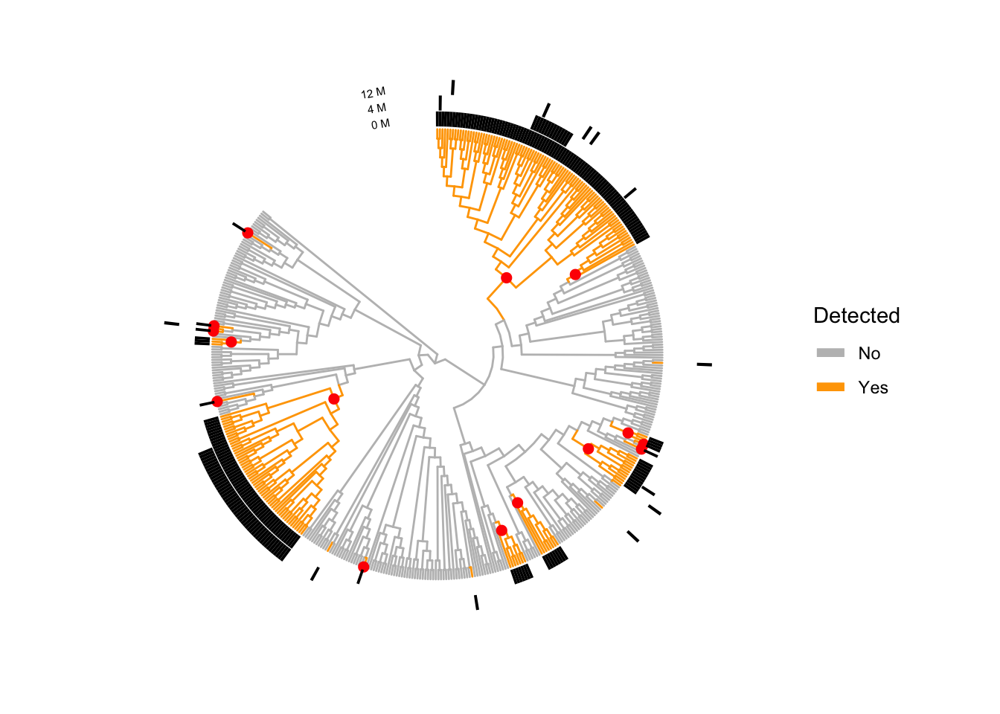
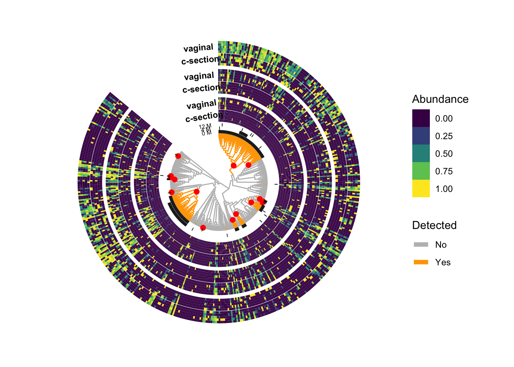
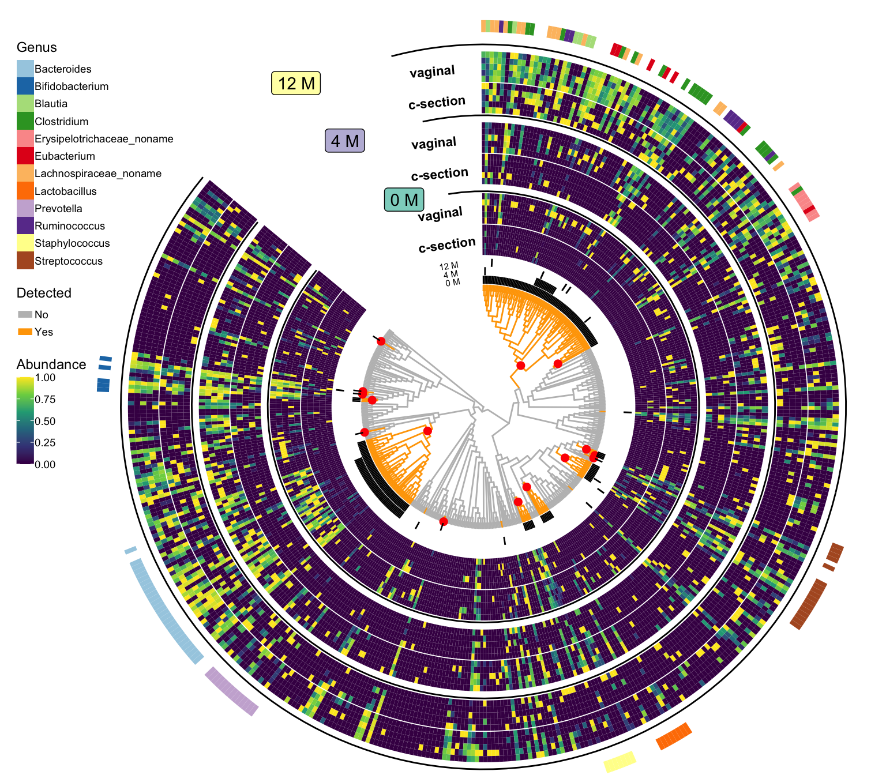

Last updated: 2020-05-16
Checks: 6 1
Knit directory: microbe/
This reproducible R Markdown analysis was created with workflowr (version 1.5.0). The Checks tab describes the reproducibility checks that were applied when the results were created. The Past versions tab lists the development history.
The R Markdown file has unstaged changes. To know which version of the R Markdown file created these results, you’ll want to first commit it to the Git repo. If you’re still working on the analysis, you can ignore this warning. When you’re finished, you can run wflow_publish to commit the R Markdown file and build the HTML.
Great job! The global environment was empty. Objects defined in the global environment can affect the analysis in your R Markdown file in unknown ways. For reproduciblity it’s best to always run the code in an empty environment.
The command set.seed(20200423) was run prior to running the code in the R Markdown file. Setting a seed ensures that any results that rely on randomness, e.g. subsampling or permutations, are reproducible.
Great job! Recording the operating system, R version, and package versions is critical for reproducibility.
Nice! There were no cached chunks for this analysis, so you can be confident that you successfully produced the results during this run.
Great job! Using relative paths to the files within your workflowr project makes it easier to run your code on other machines.
Great! You are using Git for version control. Tracking code development and connecting the code version to the results is critical for reproducibility. The version displayed above was the version of the Git repository at the time these results were generated.
Note that you need to be careful to ensure that all relevant files for the analysis have been committed to Git prior to generating the results (you can use wflow_publish or wflow_git_commit). workflowr only checks the R Markdown file, but you know if there are other scripts or data files that it depends on. Below is the status of the Git repository when the results were generated:
Ignored files:
Ignored: .DS_Store
Ignored: .Rhistory
Ignored: .Rproj.user/
Ignored: LPS/.DS_Store
Ignored: LPS/.Rhistory
Ignored: LPS/.Rproj.user/
Ignored: LPS/data/.DS_Store
Ignored: cytof/.DS_Store
Ignored: cytof/DA/.DS_Store
Ignored: cytof/DA/code/.DS_Store
Ignored: cytof/DA/code/Preparation/.DS_Store
Ignored: cytof/DS/.DS_Store
Ignored: cytof/DS/code/.DS_Store
Ignored: cytof/DS/code/Preparation/.DS_Store
Ignored: microbe/.Rproj.user/
Untracked files:
Untracked: .gitignore
Untracked: LPS/.Rprofile
Untracked: LPS/.gitattributes
Untracked: LPS/.gitignore
Untracked: LPS/LPS.Rproj
Untracked: LPS/data/LC016.zip
Untracked: LPS/data/LC016/
Untracked: LPS/data/LC017.zip
Untracked: LPS/data/LC017/
Untracked: LPS/data/LC019.zip
Untracked: LPS/data/LC019/
Untracked: LPS/data/LC020.zip
Untracked: LPS/data/LC020/
Untracked: LPS/data/LC022.zip
Untracked: LPS/data/LC022/
Untracked: LPS/data/LC023.zip
Untracked: LPS/data/LC023/
Untracked: LPS/data/LC025.zip
Untracked: LPS/data/LC025/
Untracked: LPS/data/LC026.zip
Untracked: LPS/data/LC026/
Untracked: LPS/data/metadata.xlsx
Untracked: LPS/output/3-treeclimbR.RData
Untracked: LPS/output/LPS.eps
Untracked: LPS/output/MAGL-SCE.rds
Untracked: LPS/output/all_mk.rds
Untracked: LPS/output/ao.rds
Untracked: LPS/output/as.rds
Untracked: LPS/output/cell_info.rds
Untracked: LPS/output/cell_tree.rds
Untracked: LPS/output/known_mk.rds
Untracked: LPS/output/se_count.rds
Untracked: LPS/output/se_mk.rds
Untracked: LPS/temp/all_mk.rds
Untracked: LPS/temp/ias.rds
Untracked: treeclimbR_article.Rproj
Unstaged changes:
Modified: miRNA/analysis/2-Analysis.Rmd
Modified: miRNA/docs/2-Analysis.html
Modified: miRNA/docs/3-Visualization.html
Modified: miRNA/docs/figure/3-Visualization.Rmd/unnamed-chunk-11-1.png
Modified: miRNA/docs/figure/3-Visualization.Rmd/unnamed-chunk-13-1.png
Modified: miRNA/docs/figure/3-Visualization.Rmd/unnamed-chunk-4-1.png
Modified: miRNA/docs/figure/3-Visualization.Rmd/unnamed-chunk-5-1.png
Modified: miRNA/docs/figure/3-Visualization.Rmd/unnamed-chunk-7-1.png
Modified: miRNA/docs/figure/3-Visualization.Rmd/unnamed-chunk-9-1.png
Modified: miRNA/output/heart_microRNA.eps
Modified: miRNA/output/heart_origin_result.rds
Modified: microbe/analysis/3-Visualization.Rmd
Note that any generated files, e.g. HTML, png, CSS, etc., are not included in this status report because it is ok for generated content to have uncommitted changes.
These are the previous versions of the R Markdown and HTML files. If you’ve configured a remote Git repository (see ?wflow_git_remote), click on the hyperlinks in the table below to view them.
| File | Version | Author | Date | Message |
|---|---|---|---|---|
| Rmd | 96004fe | fionarhuang | 2020-04-24 | renames files |
| html | 96004fe | fionarhuang | 2020-04-24 | renames files |
suppressPackageStartupMessages({
library(TreeSummarizedExperiment)
library(dplyr)
library(treeclimbR)
library(ggtree)
library(TreeHeatmap)
library(ggplot2)
library(viridis)
library(ggnewscale)
})Load data
load("output/Analysis.RData")new_phy <- rowTree(bse[[1]])
# tree
fig_0 <- ggtree(new_phy, layout = "fan", size = 0.5,
branch.length = "none",
open.angle = 50) %>%
rotate_tree(140)Scale for 'y' is already present. Adding another scale for 'y', which will
replace the existing scale.Coordinate system already present. Adding new coordinate system, which will replace the existing one.fig_0
| Version | Author | Date |
|---|---|---|
| b8f4b6e | fionarhuang | 2020-04-24 |
Branches that are detected in at least one time point are colored. The detected nodes in period 0 M are labeled as red points.
# tree: color branches that are detected in at least one period
uloc <- unique(unlist(loc))
ubr <- findOS(tree = new_phy, node = uloc,
only.leaf = FALSE, self.include = TRUE)
ubr <- unlist(ubr)
all_node <- showNode(tree = new_phy, only.leaf = FALSE)
df_br <- data.frame(node = all_node, Detected = "F") %>%
mutate(Detected = ifelse(node %in% ubr, "Yes", "No"))
# tree (colored branch) + result
fig_0 <- fig_0 %<+% df_br + aes(color = Detected)+
geom_point2(aes(subset = (node %in% loc[[1]])),
color = "red", size = 2) +
scale_color_manual(values = c("Yes" = "orange", "No" = "grey")) +
guides(color = guide_legend(override.aes = list(size = 2)),
fill = guide_legend(order = 1))
fig_0
| Version | Author | Date |
|---|---|---|
| b8f4b6e | fionarhuang | 2020-04-24 |
Below add bars to indicate branches detected in different periods.
# the alias labels of leaves on detected branches.
loc_leaf_alias <- lapply(loc, FUN = function(x) {
lx <- findOS(tree = new_phy, node = x,
only.leaf = TRUE, self.include = TRUE)
lx <- unlist(lx)
transNode(tree = new_phy, node = lx, use.alias = TRUE)
})
# A binary matrix: Yes (DA) & No (non-DA)
leaf <- showNode(tree = new_phy, only.leaf = TRUE)
leaf_alias <- transNode(tree = new_phy, node = leaf, use.alias = TRUE)
mat_result <- matrix(NA, nrow = length(leaf), ncol = 3)
rownames(mat_result) <- leaf_alias
colnames(mat_result) <- c("0 M", "4 M", "12 M")
for (i in seq_along(loc_leaf_alias)) {
mat_result[, i] <- ifelse(leaf_alias %in% loc_leaf_alias[[i]], "Yes", "No")
}
head(mat_result) 0 M 4 M 12 M
alias_1 "No" "No" "No"
alias_2 "No" "No" "No"
alias_3 "No" "No" "No"
alias_4 "No" "No" "No"
alias_5 "No" "No" "No"
alias_6 "No" "No" "No"# tree + bar (identified by treeclimbR)
col_sp <- colnames(mat_result)
names(col_sp) <- col_sp
fig_1 <- TreeHeatmap(tree = new_phy,
tree_fig = fig_0,
hm_data = mat_result,
rel_width = 0.2,
tree_hm_gap = 0.3,
column_split = col_sp,
column_split_gap = 0.1,
show_colnames = TRUE,
colnames_position = "top",
colnames_size = 2,
colnames_angle = 10,
colnames_hjust = 0.5,
colnames_offset_y = 20,
colnames_offset_x = 0.25) +
scale_fill_manual(values = c("Yes" = "black",
"NO" = "white"), guide = FALSE) +
new_scale_fill()Scale for 'fill' is already present. Adding another scale for 'fill', which
will replace the existing scale.fig_1
| Version | Author | Date |
|---|---|---|
| b8f4b6e | fionarhuang | 2020-04-24 |
Average samples that are generated by randomly assigning samples that have the born method and at the same time point to five categories for each category.
# observed data: count (in cpm)
lse <- lapply(bse, FUN = function(x) {
x[rowLinks(x)$isLeaf, ]
})
count <- lapply(lse, FUN = function(x) {
edgeR::cpm(assays(x)[[1]])
})
# Average samples: samples that have the born method and at the same time point are randomly assigned to five categories and an average sample is generated for each category.
set.seed(1)
ind <- lapply(bse, FUN = function(x) {
xx <- as.character(colData(x)$born_method)
sx <- split(seq_along(xx), f = xx)
lx <- lapply(sx, FUN = function(y) {
y <- sample(y)
nx <- length(y)/5
split(y, ceiling(seq_along(y)/nx))
})
})
# scale count: log transform + scale
ave_count <- ind
for (i in seq_along(ave_count)) {
ind.i <- ind[[i]]
lx <- lapply(seq_along(ind.i), FUN = function(x) {
xx <- ind.i[[x]]
xxx <- lapply(xx, FUN = function(y) {
yy <- apply(count[[i]][, y], 1, mean)
return(yy)
})
xc <- do.call(cbind, xxx)
colnames(xc) <- paste(names(ind.i)[x], seq_len(ncol(xc)), sep = "_")
return(xc)
})
ave_count[[i]] <- do.call(cbind, lx)
}
obs_ave <- lapply(seq_along(ave_count), FUN = function(x) {
xx <- ave_count[[x]]
lx <- log10(xx + 1)
ax <- apply(lx, 1, FUN = function(y) {
#if (length(unique(y))) {y} else {scale(y)}
ly <- length(unique(y))
if (ly == 1) {
ifelse(y > 0 , 1, 0)
} else{
sy <- scale(y)
(sy - min(sy))/(max(sy) - min(sy))}
})
tx <- t(ax)
rx <- rownames(xx)
cx <- colnames(xx)
nx <- names(ave_count)[x]
colnames(tx) <- paste(nx, cx, sep = ":")
return(tx)
})
obs_ave <- do.call(cbind, obs_ave)
dim(obs_ave)[1] 464 30head(obs_ave) 0 M:c_section_1 0 M:c_section_2 0 M:c_section_3 0 M:c_section_4
alias_1 0 0 0 0
alias_2 0 0 0 0
alias_3 0 0 0 0
alias_4 0 0 0 0
alias_5 0 0 0 0
alias_6 0 0 0 0
0 M:c_section_5 0 M:vaginal_1 0 M:vaginal_2 0 M:vaginal_3 0 M:vaginal_4
alias_1 0 0 0 0 0
alias_2 0 0 0 0 0
alias_3 0 0 0 0 0
alias_4 0 0 0 0 0
alias_5 0 0 0 0 0
alias_6 0 0 0 0 0
0 M:vaginal_5 4 M:c_section_1 4 M:c_section_2 4 M:c_section_3
alias_1 0 0 0 0
alias_2 0 0 0 0
alias_3 1 0 0 0
alias_4 0 0 0 0
alias_5 1 0 0 0
alias_6 0 0 0 0
4 M:c_section_4 4 M:c_section_5 4 M:vaginal_1 4 M:vaginal_2
alias_1 0 0 0 0
alias_2 0 0 0 0
alias_3 0 0 0 0
alias_4 0 0 0 0
alias_5 0 0 0 0
alias_6 0 0 0 0
4 M:vaginal_3 4 M:vaginal_4 4 M:vaginal_5 12 M:c_section_1
alias_1 0 0 0 0
alias_2 0 0 0 0
alias_3 0 0 1 0
alias_4 0 0 0 0
alias_5 0 0 1 0
alias_6 0 0 0 0
12 M:c_section_2 12 M:c_section_3 12 M:c_section_4 12 M:c_section_5
alias_1 0 0 0 0
alias_2 0 0 1 0
alias_3 0 0 0 1
alias_4 0 0 0 1
alias_5 0 0 0 1
alias_6 0 0 0 0
12 M:vaginal_1 12 M:vaginal_2 12 M:vaginal_3 12 M:vaginal_4
alias_1 0.0000000 0.0000000 0 0.0000000
alias_2 0.0000000 0.0000000 0 0.0000000
alias_3 0.5711675 0.7917966 0 0.8458279
alias_4 0.4381769 0.8070759 0 0.8551967
alias_5 0.3734241 0.6711095 0 0.6826041
alias_6 0.0000000 0.0000000 0 0.0000000
12 M:vaginal_5
alias_1 0
alias_2 0
alias_3 0
alias_4 0
alias_5 0
alias_6 0fig_2 <- fig_1
gr_C <- unique(gsub(pattern = ":.*", "", colnames(obs_ave)))
angle <- c(8, 5, 5)
for (i in seq_along(gr_C)) {
gr_ci <- gr_C[i]
sel_i <- grepl(gr_ci, colnames(obs_ave))
mc <- obs_ave[, sel_i]
head(mc)
split_i <- ifelse(grepl(pattern = ":c_", colnames(mc)),
"c-section", "vaginal")
names(split_i) <- colnames(mc)
split_lab_i <- split_i
names(split_lab_i) <- split_i
# 6 20
fig_2 <- TreeHeatmap(tree = new_phy,
tree_fig = fig_2,
tree_hm_gap = 6 + 14*(i-1),
column_split_gap = 0.2,
column_split = split_i,
column_split_label = split_lab_i,
split_label_size = 3,
split_label_offset_y = 22 -(i) * 3 ,
split_label_offset_x = -1,
split_label_angle = angle[i],
rel_width = 0.5,
hm_data = mc,
legend_title_hm = "Abundance") +
guides(fill = guide_legend(order = 2))
}Scale for 'fill' is already present. Adding another scale for 'fill', which
will replace the existing scale.
Scale for 'fill' is already present. Adding another scale for 'fill', which
will replace the existing scale.fig_2 
| Version | Author | Date |
|---|---|---|
| b8f4b6e | fionarhuang | 2020-04-24 |
# separate 0M, 4M, 12M with lines
hd <- getData(tree_hm = fig_2, type = "heatmap")
df_dec <- data.frame(x = c(max(hd$x) + 2, max(hd$x) - 12 , max(hd$x) - 27),
y1 = min(hd$y),
y2 = max(hd$y) + c(22, 18, 14),
label = c("12 M", "4 M", "0 M"),
rotate = c(12, 8, 10),
ny = c(18, 18, 10))
fig_3 <- fig_2 +
new_scale_fill() +
geom_segment(data = df_dec,
aes(x = x, y = y1, xend = x, yend = y2, group = label),
linetype = "solid",
inherit.aes = FALSE) +
geom_label(data = df_dec,
aes(x = x, y = y2 + ny, label = label,
angle = rotate, fill = label),
#alpha = 0.4,
hjust = 1,
show.legend = FALSE,
inherit.aes = FALSE) +
scale_fill_brewer(palette = "Set3") +
new_scale_fill()The genus of detected branches. We only show genus that has above five species (leaf nodes) detected.
# genus: detected
df_genus <- lapply(seq_along(loc), FUN = function(i) {
bse.i <- bse[[i]]
loc.i <- loc[[i]]
des.i <- findOS(tree = new_phy, node = loc.i,
only.leaf = TRUE, self.include = TRUE)
des.i <- unlist(des.i)
ri <- rowLinks(bse.i)$nodeNum %in% des.i
bse.ri <- bse.i[ri, ]
data.frame(Genus = as.character(rowData(bse.ri)$Genus),
node = rowLinks(bse.ri)$nodeNum,
period = names(loc)[i])
})
df_genus <- do.call(rbind, df_genus) %>%
group_by(Genus, period) %>%
mutate(n = n())
dim(df_genus)[1] 261 4# genus: detected & above 5
df_genus_4 <- df_genus %>%
filter(n > 4) %>%
mutate(alias = transNode(tree = new_phy,
node = node, use.alias = TRUE)) %>%
ungroup() %>%
select(Genus, alias) %>%
distinct()
# the matrix is used later to label heatmap
mat_genus <- cbind(as.character(df_genus_4$Genus))
colnames(mat_genus) <- "Genus"
rownames(mat_genus) <- df_genus_4$aliasfig_4 <- TreeHeatmap(tree = new_phy,
tree_fig = fig_3,
tree_hm_gap = 50,
rel_width = 0.1,
hm_data = mat_genus,
legend_title_hm = "Genus") +
scale_fill_brewer(palette = "Paired") +
guides(fill = guide_legend(order = 3))+
theme(
aspect.ratio = 1,
legend.position = c(0.15, 0.66),
legend.background = element_rect(fill = NA),
plot.title = element_text(hjust = 0.5),
legend.title = element_text(size = 9),
legend.text = element_text(size = 7),
legend.key.size = unit(0.4, "cm"),
legend.spacing.x = unit(0.2, "mm"),
legend.margin = margin(t = 0, b = 0, r = 5, l = 0),
legend.box.margin=margin(t = -5, b = -5, r = 0, l = -60),
plot.margin = margin(t = -50, b = -78, r = -200, l = -150)
)
fig_4
| Version | Author | Date |
|---|---|---|
| b8f4b6e | fionarhuang | 2020-04-24 |
ggsave("output/baby_born.eps", fig_4,
units = "in", width = 8, height = 7,
dpi = 300)
sessionInfo()R version 3.6.1 (2019-07-05)
Platform: x86_64-apple-darwin15.6.0 (64-bit)
Running under: macOS Mojave 10.14.4
Matrix products: default
BLAS: /Library/Frameworks/R.framework/Versions/3.6/Resources/lib/libRblas.0.dylib
LAPACK: /Library/Frameworks/R.framework/Versions/3.6/Resources/lib/libRlapack.dylib
locale:
[1] en_US.UTF-8/en_US.UTF-8/en_US.UTF-8/C/en_US.UTF-8/en_US.UTF-8
attached base packages:
[1] parallel stats4 stats graphics grDevices utils datasets
[8] methods base
other attached packages:
[1] ggnewscale_0.4.0 viridis_0.5.1
[3] viridisLite_0.3.0 ggplot2_3.3.0
[5] TreeHeatmap_0.1.0 ggtree_2.1.6
[7] treeclimbR_0.1.1 dplyr_0.8.5
[9] TreeSummarizedExperiment_1.3.0 SingleCellExperiment_1.8.0
[11] SummarizedExperiment_1.16.0 DelayedArray_0.12.0
[13] BiocParallel_1.20.0 matrixStats_0.55.0
[15] Biobase_2.46.0 GenomicRanges_1.38.0
[17] GenomeInfoDb_1.22.0 IRanges_2.20.0
[19] S4Vectors_0.24.0 BiocGenerics_0.32.0
loaded via a namespace (and not attached):
[1] backports_1.1.6 circlize_0.4.8
[3] diffcyt_1.6.1 workflowr_1.5.0
[5] plyr_1.8.5 igraph_1.2.4.1
[7] lazyeval_0.2.2 ConsensusClusterPlus_1.50.0
[9] splines_3.6.1 flowCore_1.52.0
[11] fda_2.4.8 TH.data_1.0-10
[13] digest_0.6.25 htmltools_0.4.0
[15] fansi_0.4.1 magrittr_1.5
[17] CytoML_1.12.0 cluster_2.1.0
[19] ks_1.11.6 limma_3.42.0
[21] ComplexHeatmap_2.2.0 RcppParallel_4.4.4
[23] R.utils_2.9.0 sandwich_2.5-1
[25] flowWorkspace_3.34.0 colorspace_1.4-1
[27] rrcov_1.4-7 xfun_0.11
[29] crayon_1.3.4 RCurl_1.95-4.12
[31] jsonlite_1.6.1 hexbin_1.28.0
[33] graph_1.64.0 lme4_1.1-21
[35] dirmult_0.1.3-4 survival_2.44-1.1
[37] zoo_1.8-6 ape_5.3
[39] glue_1.4.0 flowClust_3.24.0
[41] gtable_0.3.0 zlibbioc_1.32.0
[43] XVector_0.26.0 GetoptLong_0.1.7
[45] ggcyto_1.14.0 IDPmisc_1.1.19
[47] Rgraphviz_2.30.0 shape_1.4.4
[49] DEoptimR_1.0-8 scales_1.1.0
[51] mvtnorm_1.0-11 edgeR_3.28.0
[53] Rcpp_1.0.4 clue_0.3-57
[55] tidytree_0.3.3.991 openCyto_1.24.0
[57] mclust_5.4.5 FlowSOM_1.18.0
[59] tsne_0.1-3 RColorBrewer_1.1-2
[61] ellipsis_0.3.0 farver_2.0.3
[63] pkgconfig_2.0.3 XML_3.98-1.20
[65] R.methodsS3_1.7.1 flowViz_1.50.0
[67] locfit_1.5-9.1 labeling_0.3
[69] reshape2_1.4.3 flowStats_3.44.0
[71] tidyselect_1.0.0 rlang_0.4.5
[73] later_1.0.0 munsell_0.5.0
[75] tools_3.6.1 cli_2.0.2
[77] evaluate_0.14 stringr_1.4.0
[79] yaml_2.2.0 knitr_1.26
[81] fs_1.3.1 robustbase_0.93-5
[83] purrr_0.3.3 RBGL_1.62.1
[85] nlme_3.1-142 whisker_0.4
[87] R.oo_1.23.0 aplot_0.0.4.991
[89] compiler_3.6.1 png_0.1-7
[91] treeio_1.11.3 tibble_3.0.0
[93] pcaPP_1.9-73 stringi_1.4.6
[95] lattice_0.20-38 Matrix_1.2-17
[97] nloptr_1.2.1 vctrs_0.2.4
[99] pillar_1.4.3 lifecycle_0.2.0
[101] BiocManager_1.30.10 GlobalOptions_0.1.1
[103] data.table_1.12.6 bitops_1.0-6
[105] corpcor_1.6.9 patchwork_1.0.0
[107] httpuv_1.5.2 R6_2.4.1
[109] latticeExtra_0.6-28 promises_1.1.0
[111] KernSmooth_2.23-15 gridExtra_2.3
[113] codetools_0.2-16 boot_1.3-23
[115] MASS_7.3-51.4 gtools_3.8.1
[117] assertthat_0.2.1 rprojroot_1.3-2
[119] rjson_0.2.20 withr_2.1.2
[121] mnormt_1.5-5 multcomp_1.4-10
[123] GenomeInfoDbData_1.2.2 ncdfFlow_2.32.0
[125] grid_3.6.1 tidyr_1.0.2
[127] minqa_1.2.4 rvcheck_0.1.8
[129] rmarkdown_1.17 git2r_0.26.1
[131] base64enc_0.1-3 ellipse_0.4.1